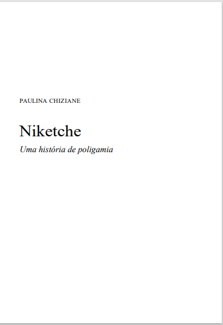

Niketche
Descrição do livro
Niketche conta a história de Tony, um alto funcionário da polícia, e sua mulher Rami, casados ha vinte anos. Certo dia, Rami descobre que o marido é polígamo: tem outras quatro mulheres e vários filhos com cada uma. As esposas de Tony estão espalhadas pelo país: em Maputo, em Inhambane, na Zambézia, em Nampula, em Cabo Delgado. Numa decisão surpreendente, Rami decide ir atrás de uma dessas mulheres. ...
Baixar Livro